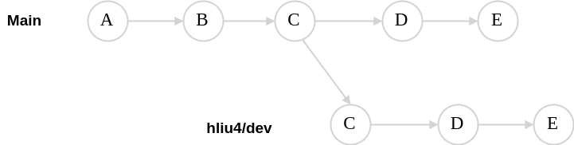

Git¶
Git Log¶
1. simple
git log --format="%h %ci %s"
2. Deleted file’s log
git log --all --full-history --format="%h %ci %s" --
Push an existing repository¶
git remote add origin https://github.com/Haitaolau/meta-test.git
git branch -M main
git push -u origin main
Showing commits unique to each branch¶
This command displays the commit history
git log --oneline --left-right <branch1>...<branch2>
Example:
hliu4@pek-lpd-susbld:elxr-config$git log --oneline --left-right hliu4/dev...main
> 5a69196 (origin/main, origin/HEAD, main) Change "suite" to aria
> 1917129 Fix ostree minimal image